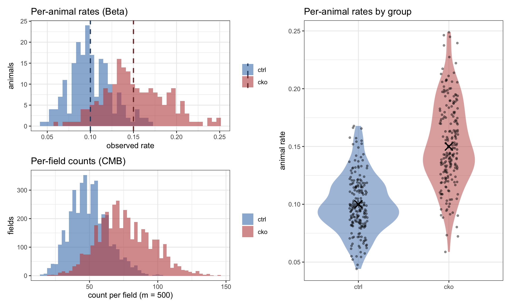
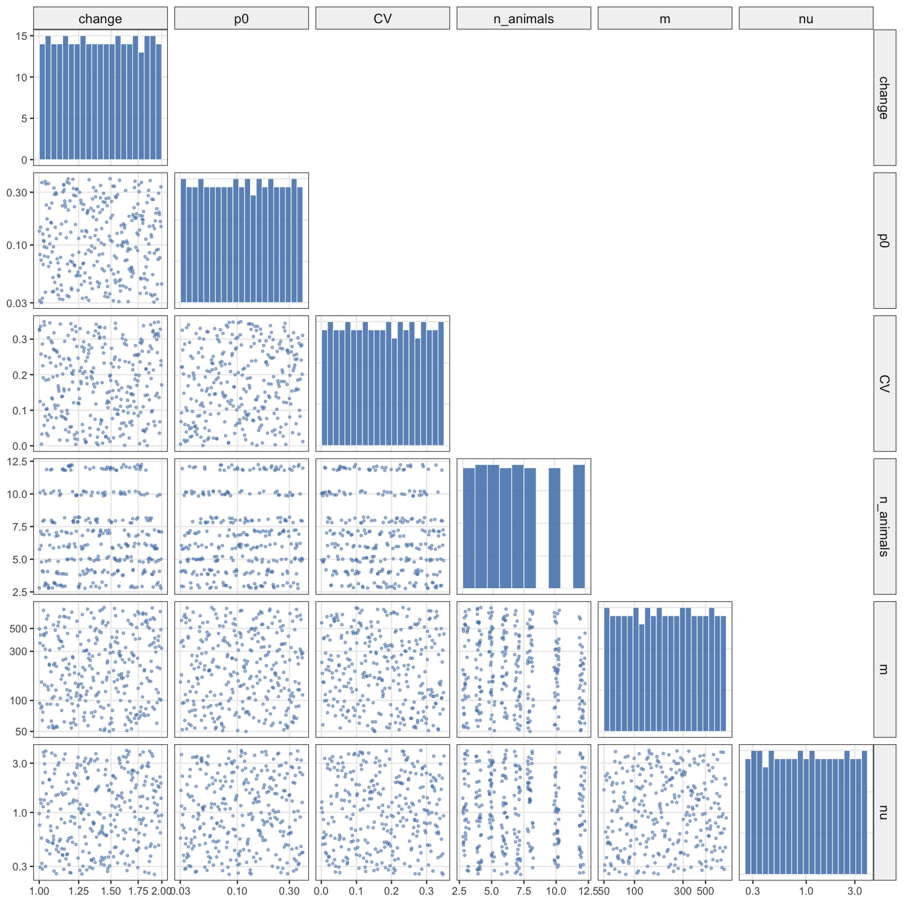
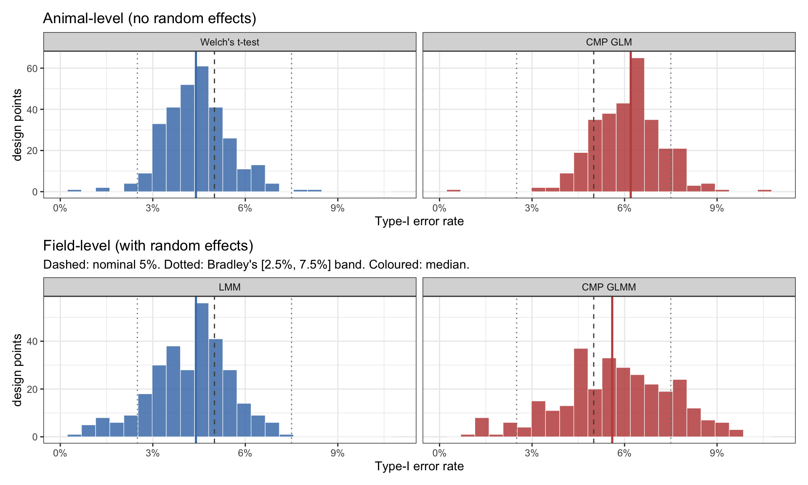
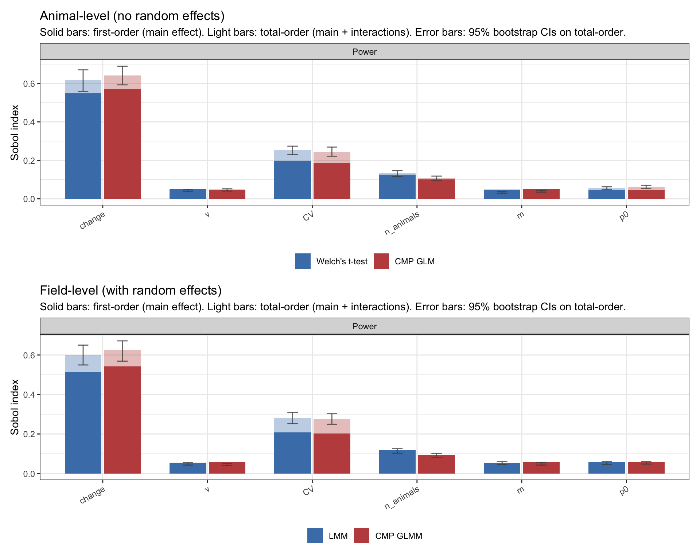
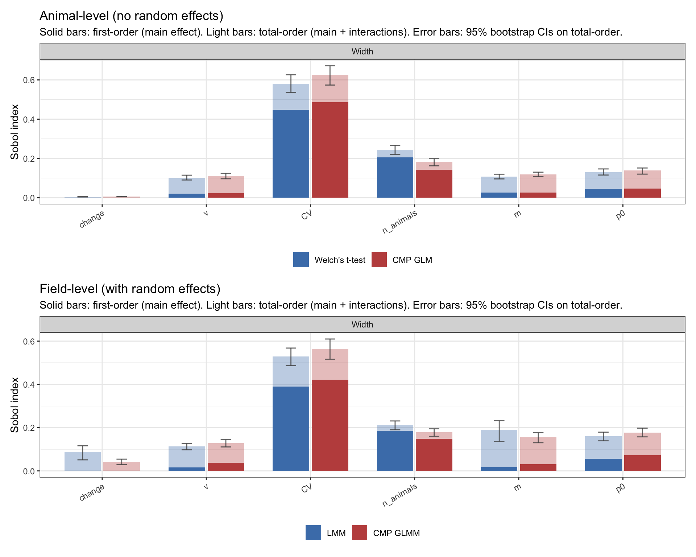
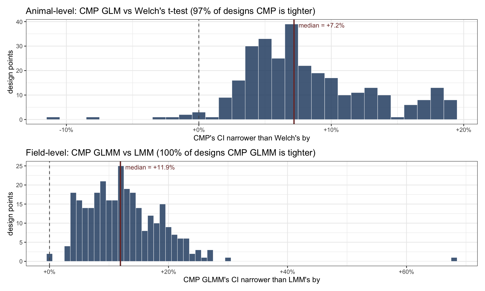

Conway–Maxwell–Poisson vs Welch’s t-test for proliferation count data
R
GLM
GLMM
Count Regression
CMP
Power Analysis
Gaussian Process
LHS
Sobol
Author
Julius Bogomolovas
Published
May 19, 2026
There is a Chinese saying, 物尽其用, which approximately translates as “make the best use of everything.” I first came across it as the title of a Song Dong installation at MoMA. So in this post I am testing whether a 物尽其用 approach to quantifying cell proliferation actually does better than the standard one.
In my work I count proliferating cardiomyocytes and compare proliferation rates between wild-type and knockout hearts. The data comes from tissue sections stained for a cardiomyocyte marker and a proliferation marker, which gives me, per microscopy field, the total number of CMs and the number of proliferating CMs.
The standard analysis is a t-test on per-animal proliferation ratios. The moment you take that path, three things get thrown away: the within-animal variation sitting right there across the multiple fields per heart; the statistical weight that should come with larger denominators (1/10 and 100/1000 are not equally trustworthy estimates of 0.1); and the awkward fact that ratios live in [0,1], which is not where a t-test wants its data. None of these are catastrophic on their own. Together they motivate an obvious question: what if we kept the information instead?
Two of the three losses, the statistical weight and the bounded distribution, are about how you model the count itself, and count regression fixes both. Instead of collapsing into a ratio, you model the raw counts directly, with total cells counted entering as an offset. The offset is what carries the credibility of each estimate into the analysis, and the model respects the discrete, bounded-below, often-overdispersed nature of count data. The third loss, within-animal variation, is about how you treat the nesting. It is fixed by adding a random intercept per animal, so the model separates between-animal from within-animal variance instead of averaging it away.
These are two orthogonal decisions. Crossed, they give a 2×2 of methods, all of which I’ll evaluate side by side:
Animal-level (no random effects). Aggregate fields to one number per animal, then test. Welch’s t-test (on ratios) vs Conway–Maxwell–Poisson (CMP) GLM (on counts). This is the standard biologist workflow.
Field-level (with random effects). Keep the field structure, add a random intercept per animal. Linear mixed model (LMM) on ratios vs CMP GLMM on counts.
I argued the count-regression half of this case in my previous publication (Bogomolovas et al., 2022), where I walked from raw microscopy images through AI-based cell counts to count-regression statistics. But I kept saying “I should formally test this.” Here it is. I believe the 物尽其用 approach is the better one, but is it always better than the default? Where does it shine? Are there regimes where the simpler approach holds up just fine?
I build the comparison from scratch: a data generator, four fitters in one place, a Latin-hypercube sweep of the realistic experimental design space, and Gaussian process emulators that let me ask questions about method behaviour anywhere in that space, not just at the handful of points I simulated. The post is organised by metric — Type-I error, statistical power, CI precision — comparing all four methods on each in turn, then a practical recommendation at the end.
Setup
Show code
suppressPackageStartupMessages({library(dplyr); library(tidyr); library(ggplot2); library(patchwork)library(scales); library(knitr)library(COMMultReg) # r_cmb, e_cmb: the simulator's count distributionlibrary(glmmTMB); library(emmeans)library(lme4); library(lmerTest)library(hetGP) # GP emulatorslibrary(lhs) # Latin hypercube sampling (used in LHS demo figure)library(GGally) # ggpairs (used in LHS demo figure)library(grateful) # auto-generated package citations})# Shared visual conventionstheme_set(theme_bw(base_size =11))method_colors_no_re <-c("Welch's t-test"="#4A7FB8","CMP GLM"="#C0504D")method_colors_re <-c("LMM"="#4A7FB8", "CMP GLMM"="#C0504D")# Tiny utilities used everywhereloguni <-function(u, lo, hi) exp(log(lo) + u * (log(hi) -log(lo)))# Smoothed logit so 0% and 100% rejection rates don't blow up the GPlogit_p <-function(p, n) { p_adj <- (p * n +0.5) / (n +1)log(p_adj / (1- p_adj))}# p-value formatting for plot annotationsfmt_p <-function(p) {if (is.na(p)) return("p = NA")if (p >=0.001) return(sprintf("p = %.3f", p)) e <-floor(log10(p)); m <- p /10^esprintf("p = %.1f \u00d7 10^%d", m, e)}
The data generator
A proliferation experiment has a three-level hierarchy: group → animal → field. The generator below produces one row per field, with these knobs:
p0: baseline proliferation rate (control group mean)
change: multiplicative effect size; 1.0 is the null
CV: between-animal coefficient of variation (biological scatter)
nu: within-field dispersion of the count distribution (measurement noise; \(\nu = 1\) is the binomial baseline, \(\nu < 1\) is overdispersed, \(\nu > 1\) is underdispersed)
n_animals, n_replicates, m: animals per group, fields per animal, cells per field
A quick note on how I landed on Beta + Conway–Maxwell–Binomial (CMB) rather than the more obvious alternatives. I first tried a Conway–Maxwell–Poisson (CMP) draw with total cells as a fixed offset. That ran into trouble: CMP is upper-unbounded, so draws sometimes overflowed the offset and produced more proliferating cells than were counted in total. That cannot happen biologically. The CMB is bounded by \(m\) by construction, which removes the overflow problem entirely. The same logic applies one level up at the animal rates: drawing them as \(p_0\) + Normal noise occasionally produced rates > 1, so I switched to drawing directly from a Beta with prescribed mean and CV. The Beta lives on \((0,1)\) by construction.
A CMB regression would be the natural choice here since the generator itself is CMB, but no CMB regression package exists yet. So I stuck with CMP for the fitters, which works fine in practice as you will see below. I am thinking of putting together a CMB regression myself at some point; most of the pieces are already out there.
Three implementation details worth surfacing. The CMB’s mean is only \(m \cdot p\) when \(\nu = 1\). For any other \(\nu\) I numerically invert the expected-value function so that a target rate produces draws that realize that rate on average. That is what p_from_rate is doing in the code below. Secondly, animal IDs are group-prefixed (ctrl1 and cko1 are different animals) so a random-effect term can’t collapse across groups by accident. Finally, the multi-field structure is preserved even when the analysis aggregates it away. That way the same generator feeds both pipelines, with and without random animal effect.
Show code
# Invert e_cmb so the caller specifies a target rate and gets back the p-parameterp_from_rate <-function(target_rate, m, nu) { target_rate <-pmax(pmin(target_rate, 0.999), 0.001)if (abs(nu -1) <1e-10) return(target_rate)tryCatch(uniroot(function(p) e_cmb(m, p, nu) / m - target_rate,lower =1e-6, upper =1-1e-6, tol =1e-8)$root,error =function(e) target_rate )}# Beta with prescribed (mean = mu, SD = mu * CV). Support is (0,1) by construction.draw_animal_rates <-function(mu, CV, n) {if (CV <=0) return(rep(mu, n)) sigma2 <- (mu * CV)^2if (sigma2 >= mu * (1- mu)) {stop(sprintf("Beta infeasible: mu=%.3g with CV=%.3g requires CV < %.3g", mu, CV, sqrt((1- mu) / mu))) } conc <- mu * (1- mu) / sigma2 -1rbeta(n, shape1 = mu * conc, shape2 = (1- mu) * conc)}simulate_experiment <-function(p0 =0.05, change =1.3, CV =0.1, nu =1.0,n_animals =6, n_replicates =3, m =500) { wt_rates <-draw_animal_rates(p0, CV, n_animals) ko_rates <-draw_animal_rates(p0 * change, CV, n_animals) wt_p <-vapply(wt_rates, p_from_rate, numeric(1), m = m, nu = nu) ko_p <-vapply(ko_rates, p_from_rate, numeric(1), m = m, nu = nu) wt_counts <-unlist(lapply(wt_p, function(p) replicate(n_replicates, r_cmb(1, m, p, nu)))) ko_counts <-unlist(lapply(ko_p, function(p) replicate(n_replicates, r_cmb(1, m, p, nu)))) EmbryoID <-c(rep(paste0("ctrl", seq_len(n_animals)), each = n_replicates),rep(paste0("cko", seq_len(n_animals)), each = n_replicates))data.frame(Y =as.integer(c(wt_counts, ko_counts)),N = m,Group =factor(c(rep("ctrl", n_animals * n_replicates),rep("cko", n_animals * n_replicates)),levels =c("ctrl", "cko")),EmbryoID =factor(EmbryoID) )}
What the generator produces
Let’s simulate an oversized experiment: 200 animals per group, 20 fields each, true effect 1.5×. This makes the three levels of variation easy to see, and gives us a concrete dataset for the sanity check that follows.
Show code
set.seed(1)demo <-simulate_experiment(p0 =0.10, change =1.5, CV =0.25, nu =1.0,n_animals =200, n_replicates =20, m =500)per_animal_demo <- demo |>group_by(EmbryoID, Group) |>summarise(animal_rate =mean(Y / N), .groups ="drop")truth_demo <-data.frame(Group =factor(c("ctrl", "cko"), levels =c("ctrl", "cko")),rate =c(0.10, 0.10*1.5))p1 <-ggplot(per_animal_demo, aes(x = animal_rate, fill = Group)) +geom_histogram(bins =40, alpha =0.6, position ="identity") +geom_vline(data = truth_demo, aes(xintercept = rate, color = Group),linewidth =0.8, linetype ="dashed") +scale_fill_manual(values =c(ctrl ="#4A7FB8", cko ="#C0504D"), name =NULL) +scale_color_manual(values =c(ctrl ="#2C4E73", cko ="#7A3431"), name =NULL) +labs(title ="Per-animal rates (Beta)",x ="observed rate", y ="animals")p2 <-ggplot(demo, aes(x = Y, fill = Group)) +geom_histogram(bins =50, alpha =0.6, position ="identity") +scale_fill_manual(values =c(ctrl ="#4A7FB8", cko ="#C0504D"), name =NULL) +labs(title ="Per-field counts (CMB)",x ="count per field (m = 500)", y ="fields")p3 <-ggplot(per_animal_demo, aes(x = Group, y = animal_rate, fill = Group)) +geom_violin(alpha =0.5, color =NA) +geom_jitter(width =0.1, alpha =0.4, size =1) +geom_point(data = truth_demo, aes(x = Group, y = rate),shape =4, size =4, stroke =1.2, color ="black",inherit.aes =FALSE) +scale_fill_manual(values =c(ctrl ="#4A7FB8", cko ="#C0504D")) +labs(title ="Per-animal rates by group", x =NULL, y ="animal rate") +theme(legend.position ="none")(p1 / p2) | p3

Figure 1: Three levels of variation in the simulator, run at oversized scale (200 animals per group, 20 fields each, true effect 1.5×). Top left: per-animal rates cluster around the true group means (dashed) with Beta scatter at the animal level. Bottom left: per-field counts add within-animal CMB noise on top. Right: per-animal rates by group, X marking the truth that the simulator recovers on average.
Four methods on one well-resourced experiment
Now to the analysis side. The 2×2 introduced at the start of this post gives four fitters, two per pipeline. All four see exactly the same simulated data; what differs is how they reduce it and what likelihood they assume.
Animal-level (no random effects) — aggregate fields to one totals row per animal first, then fit:
Welch’s t-test on per-animal proliferation ratios sum(Y) / sum(N). Unequal variances, with Welch–Satterthwaite degrees of freedom (R’s t.test() returns these by default). The df correction matters at small n: a naive z would be anti-conservative.
CMP GLM on per-animal totals: glmmTMB(Y_tot ~ Group + offset(log(N_tot)), family = compois()). The offset(log(N_tot)) turns count regression into rate regression, so the model fits log-rates with each animal’s denominator entering as statistical weight. The Conway–Maxwell–Poisson dispersion parameter \(\nu\) is estimated from the data, so the model adapts to overdispersion or underdispersion automatically rather than assuming Poisson variance.
Field-level (with random effects) — keep the field × animal hierarchy and add a random intercept per animal:
LMM on per-field ratios: lmer(Y/N ~ Group + (1 | EmbryoID)). Satterthwaite df via lmerTest, exposed through emmeans.
CMP GLMM on field-level counts: glmmTMB(Y ~ Group + offset(log(N)) + (1 | EmbryoID), family = compois()). Same count likelihood as the GLM version, but the random intercept lets the model separate between-animal from within-animal variation rather than averaging it away.
By aggregating to per-animal totals, Pipeline A sidesteps pseudoreplication at the field level — at the cost of losing within-animal variation. Pipeline B keeps it.
Shared inference machinery
The same three-step inference setup runs across all four fitters, so that the only methodological difference between methods within a pipeline is the likelihood:
emmeans for clean contrasts. The raw output of summary(glmmTMB_fit) (or lmer) is a coefficient table that’s cumbersome to read as a “cko vs ctrl group contrast on the appropriate scale”. I pull the contrast through emmeans: contrast(emmeans(fit, ~ Group, offset = 0), "revpairwise") returns a clean cko − ctrl difference on the right scale for each method.
Satterthwaite df for finite-n correction. Each pipeline shares a single df: the Gaussian fitter computes it natively (Welch’s t-test in Pipeline A, lmerTest in Pipeline B), and the count-likelihood fitter inherits it via emmeans(..., df = ...). So Welch and CMP GLM use the same df; LMM and CMP GLMM use the same df. The only remaining difference between methods within a pipeline is the likelihood.
Delta-transform for common-scale presentation. Welch’s t-test and LMM return rate differences natively; CMP returns log-rate-ratios. I delta-transform the Gaussian outputs to log-rate-ratio so all four methods report on the same scale, with the same Satterthwaite df propagating to the CI half-widths.
The two fitter functions implementing all of the above:
fit_re <-function(data, change, p0) { truth_logRR <-log(change) data$rate <- data$Y / data$N# LMM on per-field ratios (native = rate diff) lmm_n <-tryCatch({ fit <-suppressMessages(lmer(rate ~ Group + (1| EmbryoID), data = data)) con <-contrast(emmeans(fit, ~ Group), "revpairwise") cs <-as.data.frame(summary(con)); ci <-as.data.frame(confint(con))list(fit = fit, pvalue = cs$p.value[1], df = cs$df[1],estimate = cs$estimate[1], CI_lo = ci$lower.CL[1], CI_hi = ci$upper.CL[1],converged =TRUE) }, error =function(e) list(fit =NULL, pvalue =NA_real_, df =NA_real_,estimate =NA_real_, CI_lo =NA_real_,CI_hi =NA_real_, converged =FALSE)) df_use <-if (is.na(lmm_n$df)) Infelse lmm_n$df# LMM log-RR via delta with per-group emmeans SEs lmm_l <-tryCatch({if (is.null(lmm_n$fit)) stop("no LMM") es <-as.data.frame(summary(emmeans(lmm_n$fit, ~ Group))) mc <- es$emmean[es$Group =="ctrl"]; mk <- es$emmean[es$Group =="cko"] sc <- es$SE[es$Group =="ctrl"]; sk <- es$SE[es$Group =="cko"]if (mc <=0|| mk <=0) stop("non-positive group mean") est <-log(mk/mc); se <-sqrt((sk/mk)^2+ (sc/mc)^2) tcrit <-qt(0.975, df_use)list(estimate = est, CI_lo = est - tcrit*se, CI_hi = est + tcrit*se) }, error =function(e) list(estimate =NA_real_, CI_lo =NA_real_, CI_hi =NA_real_))# CMP GLMM on field-level counts (native = log-RR) cmp <-tryCatch({ fit <-suppressWarnings(glmmTMB(Y ~ Group +offset(log(N)) + (1| EmbryoID),family =compois(), data = data)) ok <-!is.null(fit$fit$convergence) && fit$fit$convergence ==0&&!is.null(fit$sdr) &&isTRUE(fit$sdr$pdHess) con <-contrast(emmeans(fit, ~ Group, offset =0), "revpairwise", df = df_use) cs <-as.data.frame(summary(con)); ci <-as.data.frame(confint(con))list(pvalue = cs$p.value[1], estimate = cs$estimate[1],CI_lo = ci$lower.CL[1], CI_hi = ci$upper.CL[1], converged = ok) }, error =function(e) list(pvalue =NA_real_, estimate =NA_real_,CI_lo =NA_real_, CI_hi =NA_real_, converged =FALSE))data.frame(method =c("lmm", "cmp_glmm"),pvalue =c(lmm_n$pvalue, cmp$pvalue),df_used =c(lmm_n$df, df_use),estimate_logRR =c(lmm_l$estimate, cmp$estimate),CI_lo_logRR =c(lmm_l$CI_lo, cmp$CI_lo),CI_hi_logRR =c(lmm_l$CI_hi, cmp$CI_hi),width_logRR =c(lmm_l$CI_hi - lmm_l$CI_lo, cmp$CI_hi - cmp$CI_lo),truth_logRR =c(truth_logRR, truth_logRR),converged =c(lmm_n$converged, cmp$converged) )}
Sanity check at scale
With all the machinery in place, let me check that all four methods recover the truth when the experiment is generously sized: 200 animals × 20 fields × 500 cells, true effect 1.5×, statistical paradise.
Note: D.f. calculations have been disabled because the number of observations exceeds 3000.
To enable adjustments, add the argument 'pbkrtest.limit = 8000' (or larger)
[or, globally, 'set emm_options(pbkrtest.limit = 8000)' or larger];
but be warned that this may result in large computation time and memory use.
Note: D.f. calculations have been disabled because the number of observations exceeds 3000.
To enable adjustments, add the argument 'lmerTest.limit = 8000' (or larger)
[or, globally, 'set emm_options(lmerTest.limit = 8000)' or larger];
but be warned that this may result in large computation time and memory use.
Note: D.f. calculations have been disabled because the number of observations exceeds 3000.
To enable adjustments, add the argument 'pbkrtest.limit = 8000' (or larger)
[or, globally, 'set emm_options(pbkrtest.limit = 8000)' or larger];
but be warned that this may result in large computation time and memory use.
Note: D.f. calculations have been disabled because the number of observations exceeds 3000.
To enable adjustments, add the argument 'lmerTest.limit = 8000' (or larger)
[or, globally, 'set emm_options(lmerTest.limit = 8000)' or larger];
but be warned that this may result in large computation time and memory use.
Table 1: Common-scale results on the ideal demo dataset (200 animals × 20 fields × 500 cells, true effect 1.5×). All four methods detect the effect emphatically and recover the truth.
Pipeline
Method
log RR
95% CI
% change
% CI
p-value
Truth
Animal-level
Welch’s t-test (Δ)
0.4165
[0.3688, 0.4643]
+51.7%
[+44.6%, +59.1%]
p = 3.6 × 10^-46
0.4055
Animal-level
CMP GLM
0.4165
[0.3682, 0.4649]
+51.7%
[+44.5%, +59.2%]
p = 2.1 × 10^-47
0.4055
Field-level
LMM (Δ)
0.4165
[0.3650, 0.4681]
+51.7%
[+44.1%, +59.7%]
p = 3.5 × 10^-62
0.4055
Field-level
CMP GLMM
0.4170
[0.3650, 0.4681]
+51.7%
[+44.1%, +59.7%]
p = 1.5 × 10^-62
0.4055
All four methods agree to four decimal places: each recovers the sample log-RR of this particular dataset (≈ 0.4165), which sits about 0.4 standard errors above the true log-RR of \(\log(1.5) \approx 0.4055\). With \(n = 200\) animals per group, the sampling SE of the log-RR estimate is ~0.024 — so a deviation of ±0.01 from truth in any one realization is exactly what we expect. Truth is inside every 95% CI, every p-value is astronomical, and the four methods give numerically indistinguishable answers. At this sample size, the choice of method doesn’t matter; only the data does.
But no real experiment has 200 animals. The interesting question is what happens in the messier universe biologists actually work in.
A universe of experiments
So the ideal case is settled: all four methods work fine when the experiment is large enough. The interesting question is the real-world case, where it usually isn’t.
Real proliferation studies come from biological material that’s expensive and ethically constrained. Six animals per group is rich. Four is common, three is typical. Field counts vary with tissue and stain, between-animal variability changes with the system, and every lab’s pipeline has its own quirks.
The honest question is not “do these methods work?” With enough data they all do. The honest question is: across the messy, resource-limited, variable experiments biologists actually run, how do they behave?
I want a surface, not a point estimate: each method’s Type-I, power, and CI precision as continuous functions of the six knobs that define a real experiment. The approach: define the design space, sample it with Latin hypercube sampling, run hundreds of simulations at each sampled point with all four fitters, and smooth the noisy per-point estimates with Gaussian process emulators. The GP is what turns 300 noisy point estimates into a continuous surface I can query anywhere in the design space, with calibrated uncertainty in regions where designs are sparse. Once the emulators are in place, Sobol decomposition lets me ask which knobs each method is actually responding to.
Two parallel campaigns. The null campaign fixes change = 1 and varies the other five knobs; from it I get Type-I error per design point, with 500 simulations per design (Type-I is the small probability we most need to pin down precisely). The main campaign varies all six knobs and uses 200 simulations per design; from it I get raw power and CI width. Splitting them this way also keeps the Type-I estimate from contaminating the power estimate. Each campaign runs for both pipelines, so four campaigns total.
Designing the LHS sample
Each knob is sampled the way its physical meaning suggests. Knobs with multiplicative biology — effect size change, baseline rate p0, cells per field m, dispersion ν — are sampled log-uniformly because a change from 0.03 to 0.06 is the same biological story as one from 0.20 to 0.40 (both are doublings, not “+0.03” or “+0.20”). Sampling these uniformly on the linear scale would over-represent the large end of each range, where small absolute differences become biologically meaningless. The between-animal CV is sampled uniformly on the linear scale, since it’s already a ratio that doesn’t need a further log. n_animals is sampled uniformly on a discrete set {3, 4, 5, 6, 7, 8, 10, 12} that covers the realistic range with denser coverage at small n where method differences matter most.
Show code
suppressPackageStartupMessages({library(lhs)library(GGally)})set.seed(42)N_DEMO <-300u_demo <-randomLHS(N_DEMO, k =6)design_demo <-data.frame(change =loguni(u_demo[, 1], 1.0, 2.0),p0 =loguni(u_demo[, 2], 0.03, 0.40),CV = u_demo[, 3] *0.35,n_animals =c(3, 4, 5, 6, 7, 8, 10, 12)[floor(u_demo[, 4] *8) +1],m =round(loguni(u_demo[, 5], 50, 800)),nu =loguni(u_demo[, 6], 0.25, 4.0))log_vars <-c("change", "p0", "m", "nu")varnames <-names(design_demo)# Lower triangle: scatter with jitter only on the n_animals axis (so the# eight discrete levels don't collapse into hard vertical stripes).lower_panel <-function(data, mapping, ...) { x_var <- rlang::as_label(mapping$x) y_var <- rlang::as_label(mapping$y) jx <-if (x_var =="n_animals") 0.25else0 jy <-if (y_var =="n_animals") 0.25else0ggplot(data, mapping) +geom_point(position =position_jitter(width = jx, height = jy, seed =1),alpha =0.5, size =0.6, color ="#4A7FB8")}# Diagonal: histogram with bins matched to each variable's sampling scheme.# Log-spaced bins for log-sampled vars → uniform sample shows flat. Integer# bins for n_animals so each discrete level is its own bar.diag_panel <-function(data, mapping, ...) { x_var <- rlang::as_label(mapping$x) vals <- data[[x_var]] brks <-if (x_var %in% log_vars) {10^seq(log10(min(vals)), log10(max(vals)), length.out =22) } elseif (x_var =="n_animals") {seq(2.5, 12.5, by =1) } else {seq(min(vals), max(vals), length.out =22) }ggplot(data, mapping) +geom_histogram(breaks = brks, fill ="#4A7FB8", alpha =0.85,color ="white", linewidth =0.2)}p <-ggpairs( design_demo,columns = varnames,lower =list(continuous = lower_panel),diag =list(continuous = diag_panel),upper =list(continuous ="blank"),axisLabels ="show") +theme_bw(base_size =9) +theme(panel.grid.minor =element_blank(),strip.background =element_rect(fill ="grey95"),strip.text =element_text(size =9))# Apply log scales to panels whose underlying variable is log-sampled.for (i inseq_along(varnames)) {for (j inseq_along(varnames)) { sub <- p[i, j]if (varnames[j] %in% log_vars) sub <- sub +scale_x_log10()if (i != j && varnames[i] %in% log_vars) sub <- sub +scale_y_log10() p[i, j] <- sub }}p

Figure 2: 300-point Latin hypercube design across all six knobs. Diagonal: marginal distribution per knob, with log-spaced bins for the log-sampled axes and one bin per integer for n_animals. Lower triangle: every two-way scatter, with the x- and y-axes set to log scale on the log-sampled variables. Uniform marginal coverage shows as flat histograms on the diagonal; the space-filling property of LHS shows as evenly-spread point clouds in every scatter. I added jitter to n_animals for visualization purposes
Reproducing the pipeline
The whole pipeline — four LHS campaigns, 12 GP emulators, Sobol indices on six of them — takes several hours of compute on a laptop, so I don’t re-run it during render. Two options for the reader: download the precomputed .rds bundles (skip to the loading chunk below), or run the three scripts below to rebuild everything from scratch. The three chunks are self-contained — concatenate them into a single .R file in order and source it. They produce nine .rds bundles in the working directory; the rest of the post loads from those.
Script 1 — build the four LHS campaigns (several hours)
# Input transforms: log on log-uniformly sampled axes, linear on CV.transform_inputs_null <-function(df) {data.frame(lnu =log(df$nu), CV = df$CV,ln_animals =log(df$n_animals), lm =log(df$m), lp0 =log(df$p0))}transform_inputs_main <-function(df) {data.frame(lchange =log(df$change), lnu =log(df$nu), CV = df$CV,ln_animals =log(df$n_animals), lm =log(df$m), lp0 =log(df$p0))}# Predict from a fitted emulator at new design points.predict_gp <-function(emulator, newdata_raw, transform_fn, link ="logit") { X_raw <-transform_fn(newdata_raw) X <-as.matrix(as.data.frame(mapply(function(col, lo, hi) (col - lo) / (hi - lo), X_raw, emulator$x_min, emulator$x_max, SIMPLIFY =FALSE))) mu <-predict(emulator$fit, x = X)$meanif (link =="logit") 1/ (1+exp(-mu)) # back to probabilityelseif (link =="log") exp(mu) # back to widthelse mu # raw GP scale}# Chunked predict to keep memory bounded on large MC grids.chunk_predict <-function(emulator, df, transform_fn, link ="logit",chunk_size =50000) { n <-nrow(df); out <-numeric(n)for (s inseq(1, n, by = chunk_size)) { e <-min(s + chunk_size -1, n) out[s:e] <-predict_gp(emulator, df[s:e, , drop =FALSE], transform_fn, link) } out}# ----- Plotting helpers shared across pipelines -----# LOOCV residual diagnostic for any pair of emulators with $loo populated.plot_loo_residuals <-function(emulators, method_colors, y_label =NULL) { method_levels <-vapply(emulators, function(e) e$label, character(1)) loo_df <-bind_rows(lapply(emulators, function(e) {data.frame(Method = e$label,y_obs = e$loo$y_obs,y_pred = e$loo$y_pred,y_sd = e$loo$y_sd,resid = e$loo$y_obs - e$loo$y_pred,covered =abs(e$loo$y_obs - e$loo$y_pred) <1.96* e$loo$y_sd) })) |>mutate(Method =factor(Method, levels = method_levels)) |>group_by(Method) |>arrange(y_obs) |>mutate(idx =row_number()) |>ungroup() cov_stats <- loo_df |>group_by(Method) |>summarise(cov95 =mean(covered),rmse =sqrt(mean(resid^2)), .groups ="drop") cov_label <-paste(sprintf("%s: 95%% cov = %.0f%%, RMSE = %.2f", cov_stats$Method, 100* cov_stats$cov95, cov_stats$rmse),collapse =" | ")ggplot(loo_df, aes(x = idx, y = resid, color = Method)) +geom_hline(yintercept =0, linetype ="dashed", color ="grey40") +geom_errorbar(aes(ymin = resid -1.96* y_sd, ymax = resid +1.96* y_sd),alpha =0.3, width =0) +geom_point(size =1.1, alpha =0.7) +facet_wrap(~ Method, nrow =1, scales ="free_x") +scale_color_manual(values = method_colors, guide ="none") +labs(title ="LOOCV residuals",subtitle = cov_label,x ="design point (sorted by observed value)",y = y_label %||%"observed \u2212 predicted") +theme_bw(base_size =11)}# Sobol first- and total-order indices for one or more targets.# `sobol_df` must have columns: input, S, S_lo, S_hi, T, T_lo, T_hi, target, method.plot_sobol <-function(sobol_df, method_colors, title =NULL) { sobol_df <- sobol_df |>droplevels() |>mutate(method =factor(method, levels =names(method_colors)))ggplot(sobol_df, aes(x = input, group = method)) +geom_col(aes(y = T, fill = method),position =position_dodge(0.75), width =0.7, alpha =0.35) +geom_col(aes(y = S, fill = method),position =position_dodge(0.75), width =0.7) +geom_errorbar(aes(ymin = T_lo, ymax = T_hi),position =position_dodge(0.75), width =0.2,color ="grey30", alpha =0.8) +facet_wrap(~ target, nrow =1) +scale_fill_manual(values = method_colors, name =NULL) +scale_y_continuous(limits =c(0, NA)) +labs(title = title,subtitle ="Solid bars: first-order (main effect). Light bars: total-order (main + interactions). Error bars: 95% bootstrap CIs on total-order.",x =NULL, y ="Sobol index") +theme_bw(base_size =11) +theme(legend.position ="bottom",axis.text.x =element_text(angle =30, hjust =1))}# Coalesce operator used by plot_loo_residuals.`%||%`<-function(a, b) if (!is.null(a)) a else b
Results
The 300-design universe is built; the 12 emulators are fit. Each metric (Type-I error, statistical power, CI precision) gets its own section below, comparing all four methods side by side. Diagnostics first (does the emulator we’re trusting actually fit the data?), then the substantive result, then a brief discussion of what drives method behaviour.
Type-I error
A method that rejects too often at the null is not more powerful — it’s crying wolf more often. We need to know each method is honest before comparing them on anything else.
The null campaign fixes change = 1 and varies the other five knobs. 300 LHS points × 500 simulations × 4 fitters → 600,000 fits, summarised to a Type-I rate per (design point, method). Each rate feeds a GP emulator, giving four Type-I surfaces I can interrogate anywhere in the design space.
How good are the emulators?
Before reading anything off the Type-I surfaces, the standard check: leave-one-out cross-validation. For each design point I refit the GP without it, predict at the held-out location, and compare prediction to observation. Residuals should cluster around zero with the ±1.96 SD predictive intervals crossing zero ~95% of the time. RMSE on the logit scale and 95% coverage are reported in the subtitle of each panel.
Figure 3: LOOCV residuals for the four Type-I emulators on the logit scale. Top row: animal-level methods (Welch’s t-test, CMP GLM). Bottom row: field-level methods (LMM, CMP GLMM). Coverage near nominal 95% with residuals centred on zero is what we want.
All four emulators are well-calibrated — coverage close to 95%, residuals centred. The Type-I surfaces are trustworthy.
Does each method hit the nominal rate?
To judge calibration I use Bradley’s [2.5%, 7.5%] band of liberal robustness for a nominal-5% test (Bradley, 1978). The idea: a Type-I rate of exactly 5% is a fantasy at finite sample sizes; what we want is a method whose empirical Type-I across realistic designs falls inside Bradley’s band. Anything outside is either conservative (wasting power, the smaller problem) or anti-conservative (false positives, the larger one).
Warning: Removed 4 rows containing missing values or values outside the scale range
(`geom_bar()`).
Warning: Removed 1 row containing non-finite outside the scale range
(`stat_bin()`).
Warning: Removed 4 rows containing missing values or values outside the scale range
(`geom_bar()`).

Figure 4: Empirical Type-I across 300 null designs, all four methods. Dashed line: nominal 5%. Dotted lines: Bradley’s [2.5%, 7.5%] band. Coloured line: median across the 300 designs.
A few things to read off this. All four methods sit mostly inside Bradley’s band — none is structurally broken. But they’re not all in the same place inside it. Welch’s t-test is mildly conservative (median ~4.4%); CMP GLM is mildly anti-conservative (median ~6%); the field-level pair sits in between. The medians are within ~1–2 pp of each other but consistently on different sides of nominal 5%.
Why this matters for power: size adjustment
Here’s the catch. If one method rejects 6% of the time at the null and another rejects 4%, then at the alternative, the first method’s “power” includes some apparent advantage that’s really just inherited Type-I inflation. To compare power fairly, I size-adjust each method’s raw power using the first-order Lloyd correction (Lloyd, 2005):
This resets every method’s starting line to 5% and asks: at a matched nominal level, who detects the effect more often? It’s not a perfect adjustment (it ignores higher-order distributional differences), but at the small Type-I gaps we see here it’s enough to make the comparison honest. All power numbers from here on are size-adjusted.
Statistical power
The main campaign varies all six knobs including effect size. 300 LHS points × 200 simulations × 4 fitters → 240,000 fits, summarised to a raw rejection rate per (design point, method). Subtracting the matched Type-I excess turns these into size-adjusted power surfaces.
Figure 5: LOOCV residuals for the four power emulators on the logit scale. Top row: animal-level. Bottom row: field-level. Coverage near 95% confirms the GP surfaces are reliable.
What drives power: Sobol decomposition
A fitted GP is more than a smoother; it’s a deterministic function I can probe. Sobol first- and total-order indices decompose the GP’s output variance into the share attributable to each input. The first-order \(S_i\) is input \(i\)’s contribution on its own; the total-order \(S_{T_i}\) adds in interactions with every other input. The gap between them is how much of an input’s influence flows through interactions.
Show code
pA <-plot_sobol(sobol_no_re |>filter(target =="Power"), method_colors_no_re,title ="Animal-level (no random effects)")pB <-plot_sobol(sobol_re |>filter(target =="Power"), method_colors_re,title ="Field-level (with random effects)")pA / pB

Figure 6: Sobol first- and total-order indices for the four power emulators. Solid bars: first-order (main effect). Light bars: total-order (main + interactions). Error bars are 95% bootstrap CIs on the total-order indices.
Across all four methods the picture is nearly identical. Power is dominated by change (~55–60% of variance), with CV second (~20–25%) and n_animals a clear but smaller third (~10–13%). The remaining knobs — ν, m, p0 — contribute under 5% each. The light bars sit modestly above the solid ones on change and CV, indicating some interaction structure, but no single pair dominates.
All four methods agree on what drives power; differences between them will live in how strongly each responds at a given design. And the three top drivers play very different roles: change is the effect we’re trying to detect, CV is a by-product of the biology/methodology, and n_animals is the one knob the experimenter actually sets.
Where does the count likelihood actually win?
GP emulation gives us a clean way to query power across the entire experimental universe. The fitted GPs aren’t just smoothers; they’re cheap surrogate models of each method’s behaviour at every point in the 6-dimensional design space. Once we have them, asking “what is method X’s power at this design?” becomes a function call rather than a fresh simulation campaign.
Apart from change, the Sobol analysis identified n_animals and CV as the two next most important drivers of power. So a natural question to ask the emulators is: at a fixed, medium-sized effect (say a 30% increase in proliferation, change = 1.3), how does each method’s power vary as a function of n_animals and CV?
To answer it cleanly we need to do something about the remaining three knobs: ν, m, and p0. We could just fix them at one arbitrary combination, but the answer would depend on the choice. Better is to marginalize over them: for each cell on the (n_animals, CV) grid, draw a Monte Carlo sample of (ν, m, p0) from their realistic distributions, predict size-adjusted power at every sampled point with the emulator, and average. Each heatmap cell is then expected power across realistic variation in the nuisance dimensions, not a slice at one arbitrary combination. Tens of thousands of GP predictions cost seconds; running a fresh simulation campaign of the same density would cost days.
The result, one heatmap per pipeline, on the same axes: animals per group on the x-axis, between-animal CV on the y-axis. Fill colour is the size-adjusted power difference (CMP minus Gaussian); the two contour lines mark each method’s 80% power boundary.
Figure 7: Animal-level (no random effects). Size-adjusted power difference (CMP GLM − Welch’s t-test) at change = 1.3, marginalized over (ν, m, p0). Lines: 80% power contour for each method individually.
Figure 8: Field-level (with random effects). Size-adjusted power difference (CMP GLMM − LMM) at change = 1.3, on the same axes for direct comparison with the animal-level figure above.
These plots reinforce what we already saw on the ideal dataset: when there is plenty of good data, all four methods agree. The heatmaps confirm it: the 80% power contour lands at essentially the same spot for both methods in each pipeline.
Yet, two things become visible from this “real world” analysis. First, adding random effects shifts the 80% contour to the left. Pipeline B reaches 80% power with noticeably fewer animals than Pipeline A across the realistic CV range. Modeling the hierarchy with (1 | EmbryoID) lets you save animals — a non-trivial 3R win for the same scientific question.
Second, and this is the punchline: in the underpowered regime below the 80% line — where most real experiments actually live — the count likelihood outshines the Gaussian one. Across most of that space CMP wins by 3 to 8 percentage points, in both pipelines. In practical terms, when you run a typical small-animal study with a real 30% effect, the count-regression test is more likely to give you the satisfying p < 0.05 than the t-test on the same data. Neither method magically rescues a badly-designed study, but in the space where biology usually lives, count regression gives you the better shot at seeing the effect that is actually there.
CI precision
So far we’ve established that count regression is more likely to deliver the satisfying p < 0.05 in the small-n regime. But a p < 0.05 on its own isn’t the whole story. Two reasons to care about how precisely each method measures the effect, not just whether it can detect one.
First, magnitude matters. A 95% CI of [-0.1, 0.5] and a 95% CI of [0.45, 0.55] both contain a real effect, but they’re telling different scientific stories. The first is “we can’t rule out no effect”; the second is “the effect is right around 0.5”. For any biology question that needs an answer beyond yes/no, interval width is the real currency.
Second, and more practically, post-hoc contrasts in multi-group or multi-factor designs live or die by precision. If your group-level estimates are noisy, the pairwise comparisons that come out of them, the tests that often carry the real biological story, will be underpowered even when the overall effect is detectable. You’ll get a significant main effect and then watch every post-hoc comparison fail to clear p < 0.05. Tight intervals at the group level are what keep that from happening.
The main campaign records the median 95% CI width per (design, method), which feeds four more GP emulators. The structure of this section mirrors the power section: emulator diagnostics, Sobol decomposition of what drives precision, then the headline comparison.
Figure 9: LOOCV residuals for the four CI-width emulators on the log scale. Top row: animal-level. Bottom row: field-level.
What drives width: Sobol decomposition
Show code
pA <-plot_sobol(sobol_no_re |>filter(target =="Width"), method_colors_no_re,title ="Animal-level (no random effects)")pB <-plot_sobol(sobol_re |>filter(target =="Width"), method_colors_re,title ="Field-level (with random effects)")pA / pB
Warning: Removed 2 rows containing missing values or values outside the scale range
(`geom_col()`).
Removed 2 rows containing missing values or values outside the scale range
(`geom_col()`).

Figure 10: Sobol indices for the four CI-width emulators. Solid bars: first-order (main effect). Light bars: total-order (main + interactions). Error bars: 95% bootstrap CIs on total-order.
In contrast to power, change is essentially zero, and it should be: once you have data with a real effect, the magnitude of that effect doesn’t determine how precisely you measure it. Width is governed by between-animal noise and sample size.
So the hierarchy reorders. CV is the dominant driver of width (~50% of variance) and n_animals is second (~15-20%). All four methods agree on this.
Two other things pop out. The remaining knobs ν, m, and p0 have small first-order effects but visibly larger total-order indices: their light bars sit roughly 2-5× higher than their solid bars. Most of their influence flows through interactions with the other knobs rather than directly. And the four methods look strikingly similar on this decomposition. The precision advantage we are about to see does not come from one method responding to a knob the others ignore. It comes from something subtler: how efficiently each method extracts information from the same drivers.
Per-design CI-width comparison
Show code
pair_no_re <- main_summary_no_re |>select(point_id, method, median_width) |>pivot_wider(names_from = method, values_from = median_width) |>mutate(pct_narrower = (1- cmp_glm / t_test) *100)med_no <-median(pair_no_re$pct_narrower, na.rm =TRUE)win_no <-mean(pair_no_re$pct_narrower >0, na.rm =TRUE)pair_re <- main_summary_re |>filter(!point_id %in% excluded_re$main) |>select(point_id, method, median_width) |>pivot_wider(names_from = method, values_from = median_width) |>mutate(pct_narrower = (1- cmp_glmm / lmm) *100)med_re <-median(pair_re$pct_narrower, na.rm =TRUE)win_re <-mean(pair_re$pct_narrower >0, na.rm =TRUE)pA <-ggplot(pair_no_re, aes(x = pct_narrower)) +geom_histogram(binwidth =1, fill ="#2C4E73", alpha =0.85,color ="white", linewidth =0.2) +geom_vline(xintercept =0, linetype ="dashed", color ="grey30") +geom_vline(xintercept = med_no, color ="#7A3431", linewidth =0.9) +scale_x_continuous(labels =function(x) sprintf("%+d%%", x)) +annotate("text", x = med_no, y =Inf,label =sprintf("median = %+.1f%%", med_no),hjust =-0.1, vjust =1.8, size =3.3, color ="#7A3431") +labs(title =sprintf("Animal-level: CMP GLM vs Welch's t-test (%.0f%% of designs CMP is tighter)",100* win_no),x ="CMP's CI narrower than Welch's by", y ="design points") +theme_bw(base_size =11)pB <-ggplot(pair_re, aes(x = pct_narrower)) +geom_histogram(binwidth =1, fill ="#2C4E73", alpha =0.85,color ="white", linewidth =0.2) +geom_vline(xintercept =0, linetype ="dashed", color ="grey30") +geom_vline(xintercept = med_re, color ="#7A3431", linewidth =0.9) +scale_x_continuous(labels =function(x) sprintf("%+d%%", x)) +annotate("text", x = med_re, y =Inf,label =sprintf("median = %+.1f%%", med_re),hjust =-0.1, vjust =1.8, size =3.3, color ="#7A3431") +labs(title =sprintf("Field-level: CMP GLMM vs LMM (%.0f%% of designs CMP GLMM is tighter)",100* win_re),x ="CMP GLMM's CI narrower than LMM's by", y ="design points") +theme_bw(base_size =11)pA / pB

Figure 11: Paired per-design CI-width gap across the 300 main-campaign LHS points, both pipelines. Negative: Gaussian method is tighter. Positive: count-likelihood method is tighter. Dashed line: parity. Coloured line: median.
At the animal level, CMP’s CI is narrower at ~97% of the 300 LHS designs, with a median ~7% improvement. At the field level the effect is stronger: CMP GLMM is narrower at essentially every design, with a median ~12% improvement. The asymmetry makes sense: the field-level fit uses all the data instead of pre-aggregating, which gives the count likelihood more room to exploit the dispersion parameter.
Bottom line
Across 300 realistic designs and three metrics, the picture is consistent.
When the experiment is well-powered, all four methods agree. At and above 80% power, the choice between Welch, LMM, CMP GLM, and CMP GLMM doesn’t materially change the answer. If you have plenty of animals and a large effect, use whichever you are comfortable with.
When the experiment is underpowered, the count likelihood gives you the better shot at seeing the effect. Across most of the realistic small-n / moderate-CV regime where biology usually lives, CMP wins by 3 to 8 percentage points of size-adjusted power over the Gaussian alternative. No method magically rescues a badly-designed study, but in the regime where the answer is hard to read, count regression is the better tool.
Modeling the field-level hierarchy further shifts the 80% power contour to the left. Field-level fits with (1 | EmbryoID) reach 80% power with noticeably fewer animals than animal-level aggregation does. A direct 3R win for the same scientific question.
On precision, the count likelihood almost always wins. CMP GLM produces narrower 95% CIs at ~97% of the 300 LHS designs (median ~7% narrower than Welch). CMP GLMM does it at essentially every design (median ~12% narrower than LMM). Precision matters wherever the work continues past a single yes/no test: post-hoc contrasts in multi-factor designs, replication studies, meta-analyses, or simply translating “X% increase” into a defensible biological claim.
Practical recommendation
Default: CMP GLMM with glmmTMB(Y ~ Group + offset(log(N)) + (1 | EmbryoID), family = compois()). At least as good as any other choice in every regime we tested, and meaningfully better in the regime where most experiments live.
Acceptable fallback: animal-level CMP GLM if the random-effect fit doesn’t converge (sometimes happens at very small n with very rare events).
Reasonable but suboptimal: Welch’s t-test on per-animal ratios, if you have a well-resourced experiment and are not chasing subtle effects.
There is no real-world downside to the count-likelihood approach. Its mild Type-I anti-conservatism at the animal level is small enough that size adjustment handles it, and you gain power and precision essentially for free.
References
Methods. The Type-I calibration band comes from Bradley (1978). The size-adjusted power formula is the first-order Lloyd correction (Lloyd, 2005). The biology, imaging pipeline, and count-regression case that this post builds on were developed in Bogomolovas et al. (2022).
Allaire, JJ, Yihui Xie, Christophe Dervieux, Jonathan McPherson, Javier Luraschi, Kevin Ushey, Aron Atkins, et al. 2025. rmarkdown: Dynamic Documents for r. https://github.com/rstudio/rmarkdown.
Bates, Douglas, Martin Mächler, Ben Bolker, and Steve Walker. 2015. “Fitting Linear Mixed-Effects Models Using lme4.”Journal of Statistical Software 67 (1): 1–48. https://doi.org/10.18637/jss.v067.i01.
Brooks, Mollie E., Kasper Kristensen, Koen J. van Benthem, Arni Magnusson, Casper W. Berg, Anders Nielsen, Hans J. Skaug, Martin Maechler, and Benjamin M. Bolker. 2017. “glmmTMB Balances Speed and Flexibility Among Packages for Zero-Inflated Generalized Linear Mixed Modeling.”The R Journal 9 (2): 378–400. https://doi.org/10.32614/RJ-2017-066.
Kuznetsova, Alexandra, Per B. Brockhoff, and Rune H. B. Christensen. 2017. “lmerTest Package: Tests in Linear Mixed Effects Models.”Journal of Statistical Software 82 (13): 1–26. https://doi.org/10.18637/jss.v082.i13.
McGillycuddy, Maeve, David I. Warton, Gordana Popovic, and Benjamin M. Bolker. 2025. “Parsimoniously Fitting Large Multivariate Random Effects in glmmTMB.”Journal of Statistical Software 112 (1): 1–19. https://doi.org/10.18637/jss.v112.i01.
R Core Team. 2025. R: A Language and Environment for Statistical Computing. Vienna, Austria: R Foundation for Statistical Computing. https://www.R-project.org/.
Raim, Andrew M., and Darcy Steeg Morris. 2026. COMMultReg: Conway-Maxwell Multinomial Regression.
Schloerke, Barret, Di Cook, Joseph Larmarange, Francois Briatte, Moritz Marbach, Edwin Thoen, Amos Elberg, and Jason Crowley. 2025. GGally: Extension to “ggplot2”. https://doi.org/10.32614/CRAN.package.GGally.
Wickham, Hadley, Mara Averick, Jennifer Bryan, Winston Chang, Lucy D’Agostino McGowan, Romain François, Garrett Grolemund, et al. 2019. “Welcome to the tidyverse.”Journal of Open Source Software 4 (43): 1686. https://doi.org/10.21105/joss.01686.
Xie, Yihui. 2014. “knitr: A Comprehensive Tool for Reproducible Research in R.” In Implementing Reproducible Computational Research, edited by Victoria Stodden, Friedrich Leisch, and Roger D. Peng. Chapman; Hall/CRC.
———. 2015. Dynamic Documents with R and Knitr. 2nd ed. Boca Raton, Florida: Chapman; Hall/CRC. https://yihui.org/knitr/.
———. 2025. knitr: A General-Purpose Package for Dynamic Report Generation in R. https://yihui.org/knitr/.
Xie, Yihui, J. J. Allaire, and Garrett Grolemund. 2018. R Markdown: The Definitive Guide. Boca Raton, Florida: Chapman; Hall/CRC. https://bookdown.org/yihui/rmarkdown.
The expensive parts of this analysis (LHS simulation campaigns, GP fitting with LOOCV, Sobol index computation) are all done offline. The .qmd just loads precomputed .rds bundles.
file
contents
lhs_null_campaign.rds
300-point null LHS, animal-level fits
lhs_campaign.rds
300-point main LHS, animal-level fits
lhs_null_campaign_re.rds
300-point null LHS, field-level fits
lhs_campaign_re.rds
300-point main LHS, field-level fits
gp_null_emulators.rds
Pipeline A Type-I GP emulators (with LOOCV)
gp_emulators.rds
Pipeline A power + width GP emulators (with LOOCV)
gp_emulators_re.rds
Pipeline B GP emulators: Type-I, power, width (with LOOCV)
sobol_no_re_indices.rds
Pipeline A Sobol indices for power + width
sobol_re_indices.rds
Pipeline B Sobol indices for power + width
All gp_* and sobol_* bundles are rebuilt by refit_emulators.R (run once from the .qmd directory). The script’s core fitting logic is reproduced earlier in this document as the refit-doc chunk.